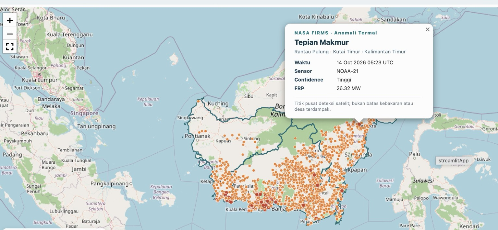

Hotspot satelit
Deteksi termal VIIRS dan MODIS melalui NASA FIRMS. Pilih 1, 2, 3, 5, atau 7 hari.
Jelajahi deteksi NASA FIRMS berdasarkan periode 1, 2, 3, 5, atau 7 hari. Klik titik untuk melihat waktu pengamatan, sensor, intensitas radiasi termal (FRP), dan nama desa pada lokasi yang tercakup peta administratif.
Pengamatan mendekati waktu nyata, bergantung ketersediaan dan jeda publikasi NASA FIRMS.

Satu dashboard untuk meninjau deteksi satelit dan konteks spasial pendukung. Semua overlay dapat diaktifkan atau dinonaktifkan sesuai kebutuhan.
Deteksi termal VIIRS dan MODIS melalui NASA FIRMS. Pilih 1, 2, 3, 5, atau 7 hari.
Klik titik deteksi untuk mengecek nama desa, kecamatan, kabupaten, dan provinsi bila data tersedia.
Aktifkan batas provinsi, batas desa, dan peta dasar sesuai kebutuhan eksplorasi.
Referensi historis tutupan lahan 10 m; bukan kondisi tutupan lahan terkini.
Layer peta gambut untuk melihat keterkaitan spasial, bukan bukti kebakaran gambut.
Dashboard dapat dibuka melalui browser tanpa memasang aplikasi khusus.
Semua orang bisa membuka peta melalui tautan publik.
Tekan tombol Jelajahi Dashboard untuk memuat data dari layanan NASA FIRMS.
Pilih hari pengamatan, lalu tampilkan WorldCover 2021, gambut, atau batas desa bila dibutuhkan.
Lihat metadata pengamatan dan desa berdasarkan pencocokan spasial.